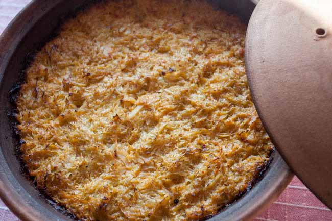
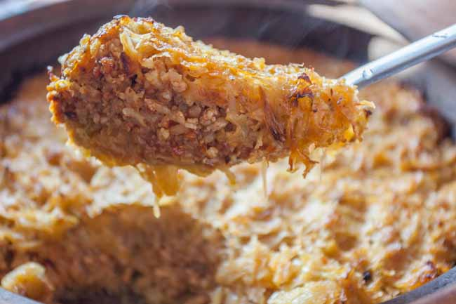
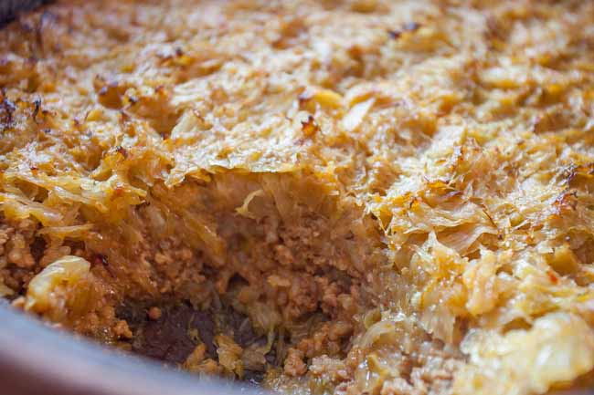

Disclaimer: All the images used here belong to their rightful owners and are just used for demonstration
purposes.
Greek Sauerkraut Recepie
The recepie for this dish is semi-complex and takes a long while to prepare, but it is very worth it. The
most similar taste is the traditional serbian Sarma. I love this dish because it is something my grandma
used to make, and it is like sarma, everybody likes sarma. (pssst, its better but don't let anybody hear
that)
Ingredients:
- 1kg of Sauerkraut
- 600g of minced meat (mixure of pork and beef)
- 200g of rice
- 1 Onion
- Spices: peppers, salt, paprika
- 1 Egg
- 1 dl of Greek yoghurt
- Cooking oil / Fats
- Water
Preparation:
- Peel and cut up the onion and panfry it until it becomes yellowish/transparent
-
Add rice into the mix and fry for another 2-3 minutes, add just a bit of water (less then half a
cup)
-
Lower the temperature to the lowest possible, put the lid on the pan and boil until the rice soaks
up all the fluids
- Whilst the rice is boiling, put some cooking oil / fats and preheat
-
Add Sauerkraut bit by bit, allowing it to get fried and taking it out as soon as it starts to get a
bit of color and smells nice
- You might need to do this spread over several takes depending on the size of your pan
- Once the rice has soaked all the fluids, add minced meat to it and raise the temperature a bit
-
Fry the meat/rice mixure for a while (not too long, it will be baked later) to relax the meat
-
Add peppers, salt and paprika to the mix and stir until the mass has homogenized, then take off the
stove
- Turn on the oven to about 200 degreese (celsius) to preheat it
- Take an oven-ready dish and grease it real good with some cooking oil or fat
- Add about 1/3 of the Sauerkraut to the bottom as the first layer
- Add half of the rice/meat combo as the second layer
-
Add second 1/3 of the Sauerkraut right after, and follow it up with the other half of the rice/meat
combo
- Finish it off with the last 1/3 of the Sauerkraut
-
Crack the egg and mix it with the greek yoghurt, energetically stir as if you want to make an
omlette
-
Once homogenized add another 2 dl of warm water to the egg/yoghurt mix and stir again until it
equalizes
-
Pour the mixure over the previously prepared dish
- Put the lid onto the bowl or wrap it in aluminum foil
- Bake in the oven for about 45-50 minutes
- Remove the lid/aluminum foil and bake for another 10-15 minutes, to get a nice crunchy top
- Serve with sourcreame or yoghurt for extra points!
The mixure of flavors is amazing. Bland of sourness relaxes the greasy taste of meat and the way of
preparation makes it feel light almost as dietary, but do not be fooled this dish is very calorie dense.


